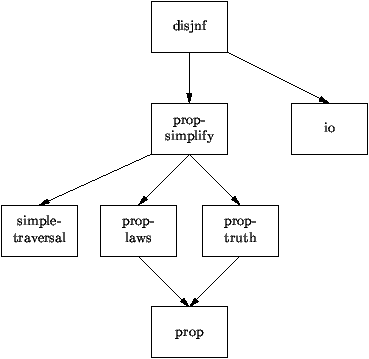

3.1 Developing Transformation Systems with Stratego
A Stratego specification consists of a collection of modules
that contain signatures, rules and strategies that together
define a transformation system. The Stratego compiler
translates a specifiation to an executable program that can be
used to transform terms.
A Stratego specification defines a transformation on terms. A
specification consists of a signature describing the structure
of the language, rules that define the steps of the
transformation, and strategies that combine the rules in a
transformation system.
All these elements can be mixed in any order in one big
file. However, to make specifications reusable, Stratego
provides a module system that can be used to spread
definitions over several files. Thus, a specification consists
of a collection of modules that define signatures, rules and
strategies.
It is usually a good idea to divide a specification over
several modules: one defining the language, several definining
various sorts of transformation rules and strategies, and one
definining the main strategy that applies these rules.
An executable transformation system can be derived from a
specification by means of the Stratego compiler sc.
Compiled specifications can be used to transform terms.
Specifications are rarely correct in one go. Some errors are
caught by the compiler, others have to be detected by
inspection of the specification and by debugging techniques.
Example: Simplification of Propositional Formulae
As an example, consider the simplification of propositional
formulae. Figure 12 shows the import graph for
the specification. An arrow points from the importing module
to the module that is imported. Module prop defines the
signature of propositional formulae. Module prop-truth
defines the truth rules for the propositional
connectives. Module prop-laws defines a number of rules
defining sound transformations on formulae. Module
prop-simplify imports modules prop-laws and
prop-truth and defines various ways of combining the
rules in simplifying transformations. Module disjnf
declares one of these transformations, i.e., the
simplification of a formula to disjunctive normal form, to be
the main transformation.
In addition, module prop-simplify imports the module
simple-traversal, which defines a number of standard
term traversals. Module disjnf imports io,
which defines strategies for term input and output. The latter
two modules are part of the Stratego library.
Figure 11: The development process
-
Develop specification = collection of modules defining
-
Signature
- Rules
- Strategies
- Compile specification
- Use compiled specification
Figure 12: Import graph of a specification
